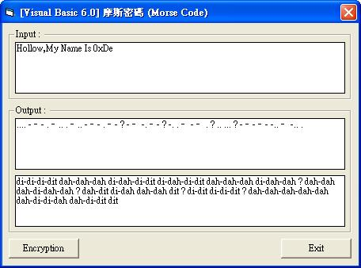
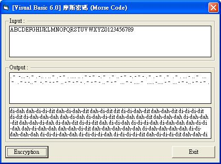

[Visual Basic 6.0] 將明文處理轉換為密文 摩斯密碼 (Morse Code) (作者：廖憲得 0xde)
何謂 摩斯密碼 (Morse Code) ?
摩斯電碼（英語：Morse Code）是一種時通時斷的訊號代碼，透過不同的排列順序來表達不同的英文字母、數字和標點符號。是由美國人薩繆爾·摩斯在1836年發明。
摩斯電碼是一種早期的數位化通訊形式，但是它不同於現代只使用0和1兩種狀態的二進制代碼，它的代碼包括五種：
- 點（.）
- 劃（-）
- 每個字元間短的停頓（在點和劃之間的停頓）
- 每個詞之間中等的停頓
- 以及句子之間長的停頓
來源：維基百科-摩斯電碼


A . – (di-dah)
B - . . . (dah-di-di-dit)
C - . – . (dah-di-dah-dit)
D - . . (dah-di-dit)
E . (dit)
F . . – . (di-di-dah-dit)
G - – . (dah-dah-dit)
H . . . . (di-di-di-dit)
I . . (di-dit)
J . – - – (di-dah-dah-dah)
K - . – (dah-di-dah)
L . – . . (di-dah-di-dit)
M - – (dah-dah)
N - . (dah-dit)
O - – - (dah-dah-dah)
P . – . (di-dah-dah-dit)
Q - – . – (dah-dah-di-dah)
R . – . (di-dah-dit)
S . . . (di-di-dit)
T - (dah)
U . . – (di-di-dah)
V . . . – (di-di-di-dah)
W . – - (di-dah-dah)
X - . . – (dah-di-di-dah)
Y - . – - (dah-di-dah-dah)
Z - – . . (dah-dah-di-dit)
0 - – - – - (dah-dah-dah-dah-dah)
1 . – - – - (di-dah-dah-dah-dah)
2 . . – - – (di-di-dah-dah-dah)
3 . . . – - (di-di-di-dah-dah)
4 . . . . – (di-di-di-di-dah)
5 . . . . . (di-di-di-di-dit)
6 - . . . . (dah-di-di-di-dit)
7 - – . . . (dah-dah-di-di-dit)
8 - – - . . (dah-dah-dah-di-dit)
9 - – - – . (dah-dah-dah-dah-dit)我將以上的表建立為資料庫
MorseCode = "A,.–,di-dah|B,-...,dah-di-di-dit|C,-.–.,dah-di-dah-dit|D,-..,dah-di-dit|E,.,dit|F,..–.,di-di-dah-dit|G,-–.,dah-dah-dit|H,....,di-di-di-dit|I,..,di-dit|J,.–-–,di-dah-dah-dah|K,-.–,dah-di-dah|L,.–..,di-dah-di-dit|M,-–,dah-dah|N,-.,dah-dit|O,-–-,dah-dah-dah|P,.–.,di-dah-dah-dit|Q,-–.–,dah-dah-di-dah|R,.–.,di-dah-dit|S,...,di-di-dit|T,-,dah|U,..–,di-di-dah|V,...–,di-di-di-dah|W,.–-,di-dah-dah|X,-..–,dah-di-di-dah|Y,-.–-,dah-di-dah-dah|Z,-–..,dah-dah-di-dit|0,-–-–-,dah-dah-dah-dah-dah|1,.–-–-,di-dah-dah-dah-dah|2,..–-–,di-di-dah-dah-dah|3,...–-,di-di-di-dah-dah|4,....–,di-di-di-di-dah|5,.....,di-di-di-di-dit|6,-....,dah-di-di-di-dit|7,-–...,dah-dah-di-di-dit|8,-–-..,dah-dah-dah-di-dit|9,-–-–.,dah-dah-dah-dah-dit"
Dim MorseCodeData(35, 2)
'------------------------------------------------
Private Sub Form_Load() ' 載入主程式 (建立資料庫)
MorseCode = "A,.–,di-dah|B,-...,dah-di-di-dit|C,-.–.,dah-di-dah-dit|D,-..,dah-di-dit|E,.,dit|F,..–.,di-di-dah-dit|G,-–.,dah-dah-dit|H,....,di-di-di-dit|I,..,di-dit|J,.–-–,di-dah-dah-dah|K,-.–,dah-di-dah|L,.–..,di-dah-di-dit|M,-–,dah-dah|N,-.,dah-dit|O,-–-,dah-dah-dah|P,.–.,di-dah-dah-dit|Q,-–.–,dah-dah-di-dah|R,.–.,di-dah-dit|S,...,di-di-dit|T,-,dah|U,..–,di-di-dah|V,...–,di-di-di-dah|W,.–-,di-dah-dah|X,-..–,dah-di-di-dah|Y,-.–-,dah-di-dah-dah|Z,-–..,dah-dah-di-dit|0,-–-–-,dah-dah-dah-dah-dah|1,.–-–-,di-dah-dah-dah-dah|2,..–-–,di-di-dah-dah-dah|3,...–-,di-di-di-dah-dah|4,....–,di-di-di-di-dah|5,.....,di-di-di-di-dit|6,-....,dah-di-di-di-dit|7,-–...,dah-dah-di-di-dit|8,-–-..,dah-dah-dah-di-dit|9,-–-–.,dah-dah-dah-dah-dit"
MorseDataA = Split(MorseCode, "|")
For i = 0 To UBound(MorseDataA)
MorseDataB = Split(MorseDataA(i), ",")
For J = 0 To UBound(MorseDataB)
MorseCodeData(i, J) = MorseDataB(J)
Next J
Next i
End Sub
'------------------------------------------------
Private Sub Command1_Click()
Text2 = ""
Text3 = ""
For i = 1 To Len(Text1)
If Asc(Mid(Text1, i, 1)) >= 97 And Asc(Mid(Text1, i, 1)) <= 122 Then
Inp = Chr(Asc(Mid(Text1, i, 1)) - 32)
Else
Inp = Mid(Text1, i, 1)
End If
OutA = "?"
OutB = "?"
For J = 0 To 35
If Inp = MorseCodeData(J, 0) Then OutA = MorseCodeData(J, 1)
If Inp = MorseCodeData(J, 0) Then OutB = MorseCodeData(J, 2)
Next J
Text2 = Text2 & OutA & " "
Text3 = Text3 & OutB & " "
Next i
End Sub
'------------------------------------------------
Private Sub Command3_Click()
End
End Sub
'------------------------------------------------【本文作者為「廖憲得」，原文網址為： http://www.dotblogs.com.tw/0xde/archive/2013/12/05/132685.aspx ，由陳鍾誠編輯後納入本雜誌】